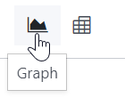
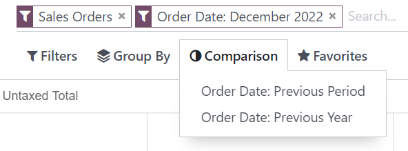
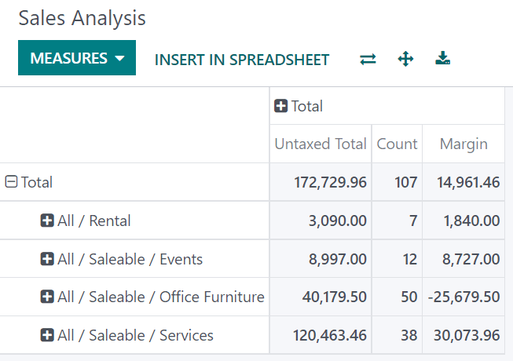
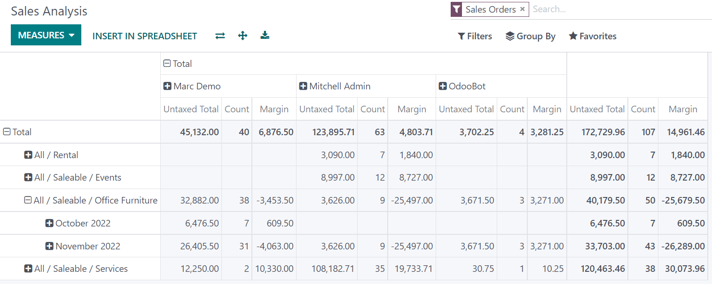

Reporting¶
You can find several reports under the Reporting menu of most apps that let you analyze and visualize the data of your records.
Selecting a view¶
Depending on the report, Odoo can display the data in various ways. Sometimes, a unique view fully tailored to the report is available, while several views are available for others. However, two generic views are dedicated to reporting: the graph and pivot views.
Graph view¶
The graph view is used to visualize your records’ data, helping you identify patterns and trends. The view is often found under the Reporting menu of apps but can be found elsewhere. Click the graph view button located at the top right to access it.
Pivot view¶
The pivot view is used to aggregate your records’ data and break it down for analysis. The view is often found under the Reporting menu of apps but can be found elsewhere. Click the pivot view button located at the top right to access it.

Choosing measures¶
After selecting a view, you should ensure only the relevant records are filtered. Next, you should choose what is measured. By default, a measure is always selected. If you wish to edit it, click Measures and choose one or, only for pivots, multiple measures.
Note
When you select a measure, Odoo aggregates the values recorded on that field for the filtered records. Only numerical fields (integer, decimal, monetary) can be measured. In addition, the Count option is used to count the total number of filtered records.
After choosing what you want to measure, you can define how the data should be grouped depending on the dimension you want to analyze. By default, the data is often grouped by Date > Month, which is used to analyze the evolution of a measure over the months.
Tip
When you filter a single time period, the option to compare it against another one appears.
Example
Among other measures, you could add the Margin and Count measures to the Sales Analysis report. By default, the Untaxed Amount measure is selected.

You could group the measures by Product Category at the level of rows on the previous Sales Analysis report example.
Using the pivot view¶
Grouping data is quintessential to the pivot view. It enables drilling down the data to gain deeper insights. While you can use the Group By option to quickly add a group at the level of rows, as shown in the example above, you can also click the plus button (➕) next to the Total header at the level of rows and columns, and then select one of the preconfigured groups. To remove one, click the minus button (➖).
Once you have added a group, you can add new ones on the opposite axis or the newly created subgroups.
Example
You could further divide the measures on the previous Sales Analysis report example by the Salesperson group at the level of columns and by the Order Date > Month group on the All / Saleable / Office Furniture product category.
Tip
Switch the rows and columns’ groups by clicking the flip axis button (⇄).
Click on a measure’s label to sort the values by ascending (⏶) or descending (⏷) order.
Download a
.xlsxversion of the pivot by clicking the download button (⭳).
Using the graph view¶
Three graphs are available: the bar, line, and pie charts.
Bar charts are used to show the distribution or a comparison of several categories. They are especially useful as they can deal with larger data sets.
Line charts are useful to show changing time series and trends over time.
Pie charts are used to show the distribution or a comparison of a small number of categories when they form a meaningful whole.


Tip
For bar and line charts, you can use the stacked option when you have at least two groups, which then appear on top of each other instead of next to each other.


For line charts, you can use the cumulative option to sum values, which is especially useful to show the change in growth over a time period.